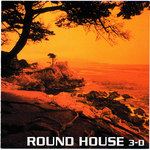

Home Artist links Label link

Round House - 3d
| Artist: | Round House |
| Title: | 3d |
| Label: | Musea/Poseidon fgbg 4639/PRF-034 |
| Length(s): | 56 minutes |
| Year(s) of release: | 2006 |
| Month of review: | [07/2008] |
Line up
Masayuki Kato - guitar, guitar synth, programming
Yoshiaki Uemura - bass
Soura Ishikawa - keyboard
Tracks
| 1) | 3-D | 5.21
|
| 2) | Romantic Rally | 8.42
|
| 3) | SuperWarp | 6.20
|
| 4) | INORI | 7.52
|
| 5) | Amber Rain | 5.09
|
| 6) | Tears Of Sphinx | 6.28
|
| 7) | SUISYAGOYA NO ASA | 9.08
|
| 8) | Carnival Night | 3.29
|
| 9) | JINZO-NINGEN.2005 | 4.06
|
Summary
The music
Roundhouse make the sort of jazzrocky stuff put on the map by compatriots Ain Soph. The music is jazzrock in basis but has a lot of EM and romantic elements injected into it, as well as doodling an dwiddling. Even though this might be confused with some American romantic EM from the eighties, I do feel that this particular strand is distincly Japanese. And, oh, if only it could have stayed there. Apart from that there is some happy piano playing that reminds me a bit of such jazzpop bands as Shakatak, maybe a bit of Koinonia.
As you can see the band have no drummer, yet there is quite a bit of percussion. Yes, the dreaded boxed type percussion. One might take the positions that with music as electronically directed as this, electronic drums might be fitting. The unnatural sound of it is very present, though.
The band manage to make all the tracks sound more or less diffirent from eachother, which is a nice achievement if you consider the background. Still, they remain very consistent. In SUISYAGOYA NO ASA the album has its probable highpoint, in my opinion, as the band quote, or nick from, Renaissance. The first and last nice bit of melody.
Conclusion
I takes less than ten seconds for the music to start irritating me. From this on my irritation goes up, down, like a yoyo, but stays till the end. Those into the Ain Soph sound, and possibly those into romantic-ish EM, would do wise in checking this stuff out. The cold electronic sound and over-agressive frills of this will, however, will not charm too many others.
© Roberto Lambooy